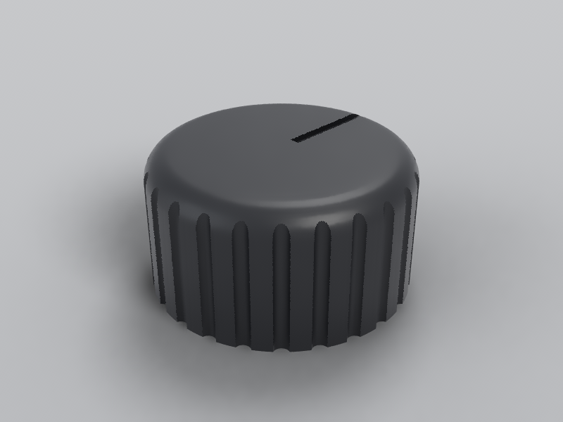

knob
A revolved control knob: a half-profile on the XZ plane spun about Z, a knurled rim, a D-shaft bore and a pointer groove. Run: cad run examples/knob.ts

Source
Run it with cad run examples/knob.ts.
// A revolved control knob: a half-profile on the XZ plane spun about Z, a knurled rim, a
// D-shaft bore and a pointer groove. Run: cad run examples/knob.ts
import { Plane, box, cylinder, model, param, sketch } from "@cad/sdk";
export const knob = model("knob", () => {
const r = param("radius", 15, { min: 8, max: 30, unit: "mm" });
const h = param("height", 16, { min: 8, max: 30, unit: "mm" });
const ridges = param("ridges", 24, { min: 8, max: 60, step: 1 });
// u is the radius, v the height: profile of a skirt with a rounded top edge.
const profile = sketch(Plane.XZ)
.moveTo(0, 0)
.hLineTo(r)
.vLineTo(h - 3)
.tangentArcTo(r - 3, h)
.hLineTo(0)
.close();
const body = profile.revolve();
const ridge = cylinder(0.9, h * 2).translate(r + 0.3, 0, 0);
const shaft = cylinder(3, 12, { align: ["center", "center", "min"] })
.cut(box(10, 10, 12, { align: ["min", "center", "min"] }).translate(1.5, 0, 0)); // a 6 mm D-shaft, flat at x = 1.5
const pointer = box(1.2, r, 1.2, { align: ["center", "min", "center"] }).translate(0, 2, h);
return body
.cut(ridge.polarCopies(ridges), shaft, pointer)
.label("knob", { color: "#202124", material: "abs" });
});
if (import.meta.main) await knob();